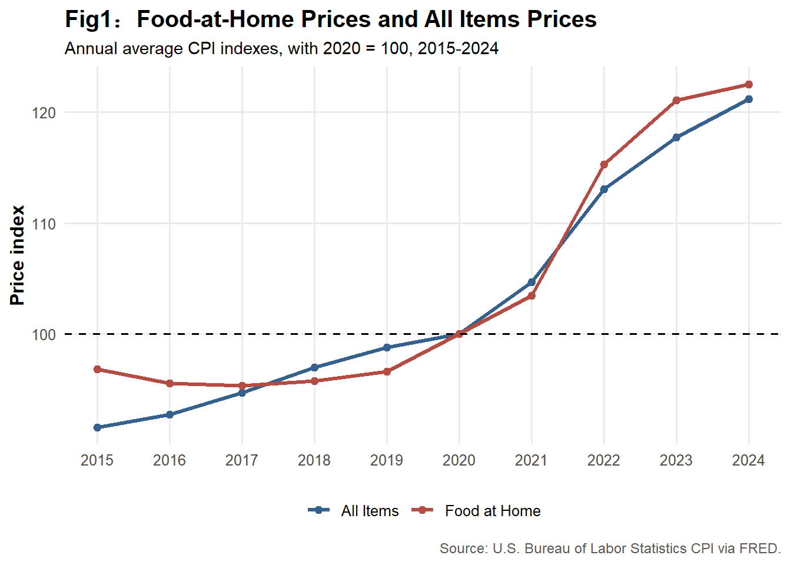
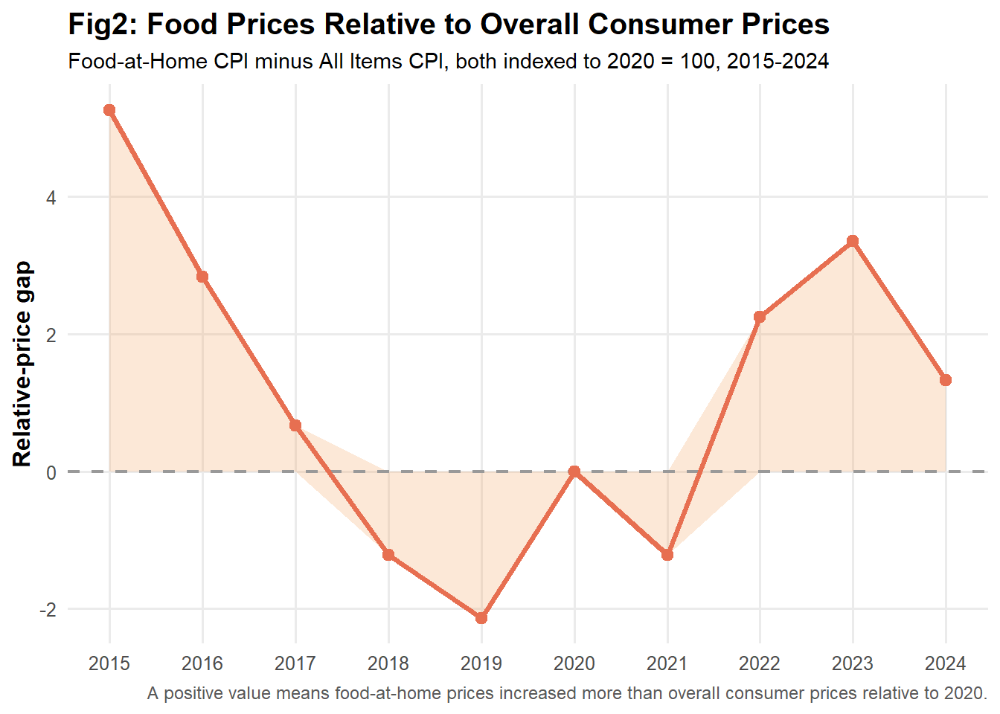
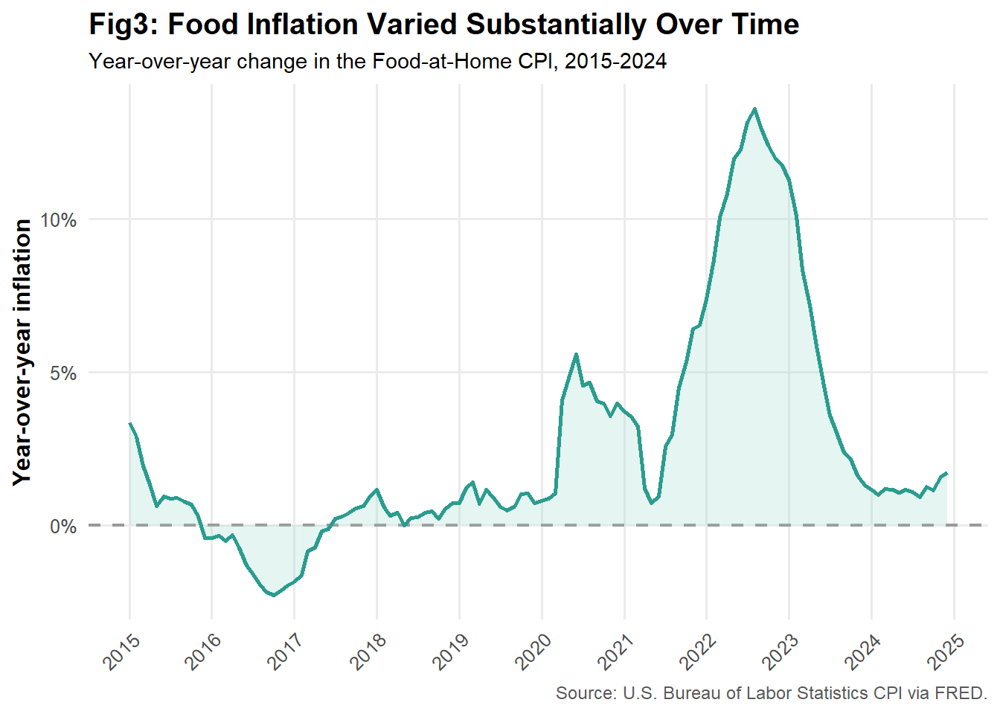
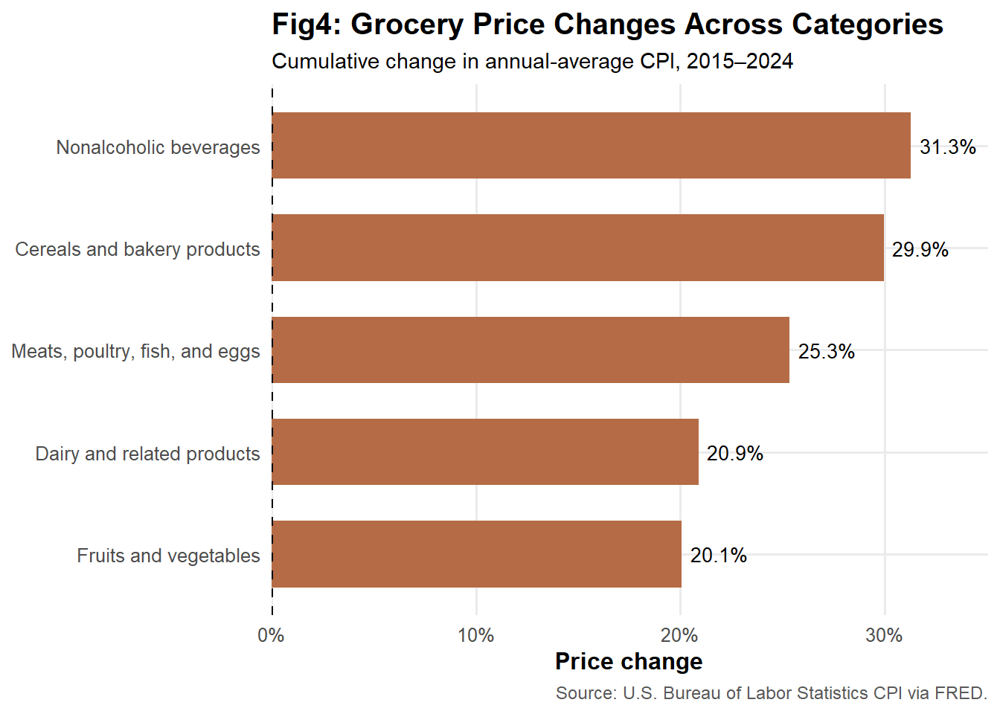
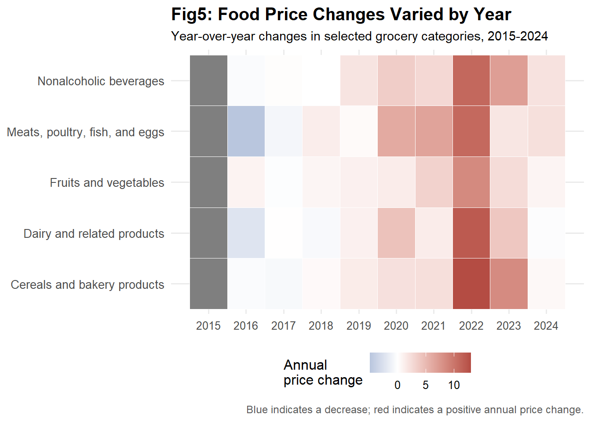
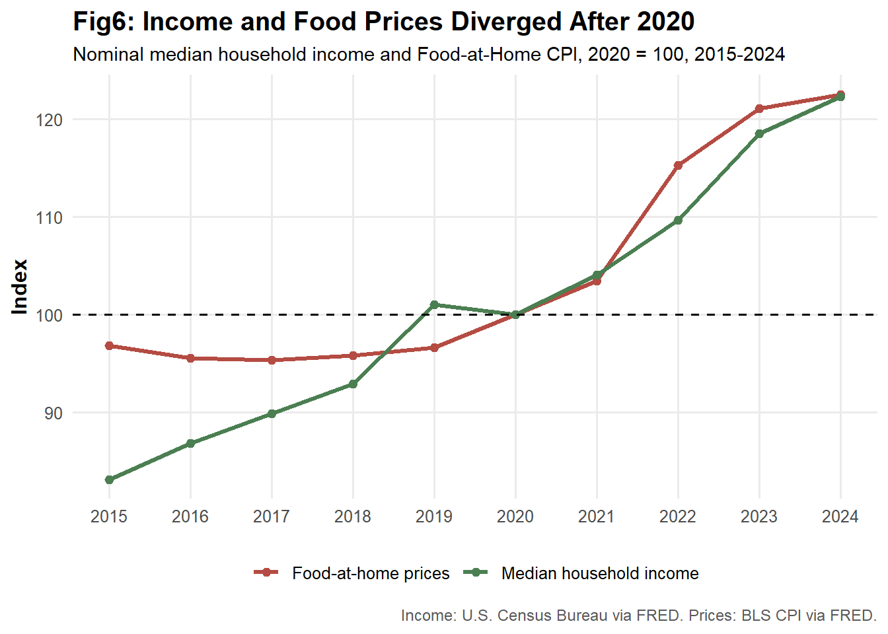
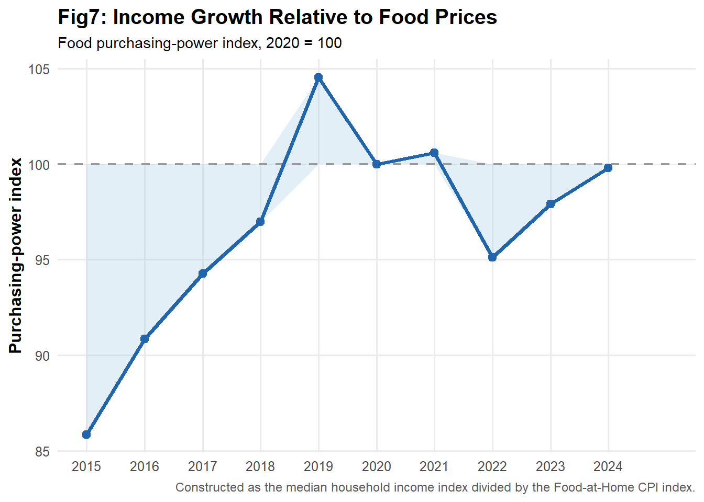

Are Our Paychecks Keeping Up With Food Prices?
Food Inflation, Grocery Prices, and Household Purchasing Power in the United States, 2015–2024
inflation
household-economics
When food prices rise, it is tempting to focus on a simple question: How much more expensive has food become? But the economic story can become more informative when we compare food prices with other prices and with household income.
This leads to a broader economic question:
How have food-at-home prices changed relative to overall consumer prices and household income in the United States?
Using monthly Consumer Price Index (CPI) data from the U.S. Bureau of Labor Statistics through FRED, together with annual median household income from the U.S. Census Bureau, this analysis examines food-at-home prices from 2015 to 2024. The analysis is descriptive rather than causal: it asks how prices changed, which food categories changed most, when major increases occurred, and whether income kept pace.
Food became more expensive—but the relative price matters
Both food-at-home prices and the overall consumer price level increased. Before 2020, food-at-home prices generally increased more slowly than overall consumer prices. After 2020, food prices accelerated and moved slightly above the overall CPI. The important point is, not simply that prices increased, but food became relatively more expensive compared with the overall consumer price level.
To measure this relative-price difference, I subtract the All Items CPI from the Food-at-Home CPI after indexing both series to 2020 = 100:

The relative-price gap became positive after 2020 and was largest around 2022. A positive gap means that food prices had increased more than overall consumer prices relative to 2020. (This is a difference in cumulative price levels, not a difference in annual inflation rates.)
The overall food inflation rate provides a more detailed view of how this inflation episode evolved over time：

Food-at-Home inflation accelerated sharply during 2022 and then declined substantially in 2023. This highlights an important distinction between inflation and the price level: a lower inflation rate means that food prices are rising more slowly, not that they are falling. Thus, even after food inflation cooled, households could continue to face a higher food-price level than before the inflation surge.
What Is Happening Inside the Grocery Basket? Not All Food Inflation Is the Same
Food includes many different products, and their prices did not move together. From 2015 to 2024, the five selected food categories—cereals and bakery products, meats, poultry, fish and eggs, fruits and vegetables, nonalcoholic beverages, and dairy products—experienced noticeably different cumulative price increases.

This matters because aggregate food inflation can hide differences across consumption baskets. A household that spends more on a rapidly increasing category may face greater food-price pressure than a household whose purchases are concentrated in slower-growing categories.
The timing of these price increases also matters. Annual price growth accelerated around 2021–2022, but the magnitude and timing varied across categories:

These differences show that food inflation was not a uniform shock across products. Different categories experienced stronger price increases at different times, so households with different consumption patterns could experience different rates of food-price growth.
Did Income Keep Up?
Price increases become more meaningful when compared with household income. I normalize median household income and the Food-at-Home CPI to 2020 = 100：

Before 2020, median household income generally grew faster than food prices. During 2021–2022, food prices temporarily grew faster than income, increasing the cost of food relative to median household income. By 2024, the two measures had moved closer together.
To summarize this relationship, I construct a Food Purchasing-Power Index:
\[ \text{Food Purchasing-Power Index}_t = \frac{\text{Income Index}_t} {\text{Food Price Index}_t} \times 100 \]
The index is normalized to 100 in 2020.
- A value above 100 means income increased faster than food prices relative to 2020.
- A value below 100 means food prices increased faster than income.
- A value of 100 means the two grew proportionally relative to the base year.

The index rose from about 86 in 2015 to above 100 before the pandemic, fell to roughly 95 in 2022, and recovered toward 100 by 2024.
The result is more nuanced than saying that households permanently lost purchasing power. The food-price shock temporarily reduced median income relative to food prices, but this gap narrowed as income continued to grow and food inflation slowed.
Takeaway
A grocery-price analysis becomes economically useful when it goes beyond the observation that “prices went up.” The data show that Food prices rose faster than overall prices and, temporarily, faster than household income. The gap was largest around 2022, while different food categories experienced different price increases and timing. By 2024, income had largely caught up with food prices, suggesting that the loss in food purchasing power during the inflation surge was not permanent.
The economic lesson is that a grocery-price analysis becomes economically useful when it goes beyond the observation that “prices went up.” What matters is how prices change relative to other goods and to the incomes used to pay for them. Because households buy different baskets, the same food-price shock can also affect them differently. This descriptive analysis therefore shows why comparing prices, consumption patterns, and income together gives a clearer picture of how inflation reaches households. Understanding their relationship helps connect national economic statistics to the prices and incomes that households encounter in everyday economic decisions.